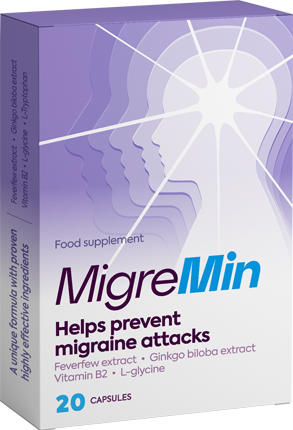
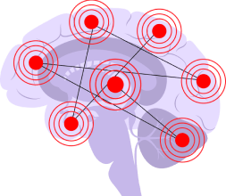
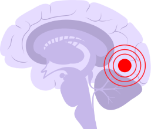
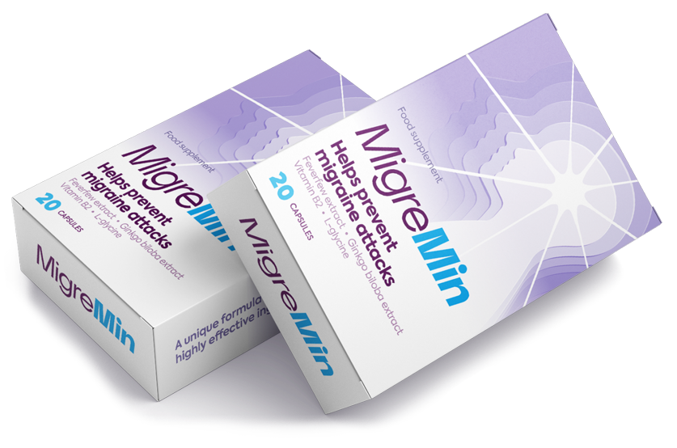
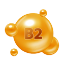

Полноценная жизнь без мучительных головных болей – это ваш выбор.
Сделайте его вместе с MigreMin

- Имеет накопительный эффект
- Нормализует сон и эмоциональное состояние
- Улучшает общее самочувствие
- Снижает интенсивность головной боли с первых дней приема
Осталось товаров по акции: 12 шт
Болезнь, которая вгоняет в ужас – мигрень
Вам наверняка знакомы симптомы, сигнализирующие о надвигающейся мигрени.
Они часто бывают незначительными, их можно спутать с чем угодно другим. Вот самые частые из них:
- тяга к еде или, наоборот, потеря аппетита;
- “мушки” или пятна перед глазами;
- раздражительность;
- сонливость;
- снижение трудоспособности;
- перепады настроения;
- гиперактивность;
- повышенная жажда.
Мигрень отравляет жизнь


Болезнь проявляет себя по-разному, но каждый раз это невыносимо. У многих все начинается с ауры – нарушения зрения, слуха и даже вкуса. И, хотя сама по себе аура не доставляет болевых ощущений, уже на этой стадии многие впадают в отчаяние и даже истерику: в голове грядет полномасштабная война.
Боль, которую испытывает человек во время приступа, нельзя описать обычными словами. Это настоящий ужас, который буквально останавливает человеческую жизнь на несколько часов или дней, полностью отравляя его существование в целом.
Существуют так называемые маячки, которые сигнализируют о необходимости прибегнуть к экстренной госпитализации. Эти приступы можно пережить без врачебного вмешательства, но никто не даст вам гарантий, что один из них не станет последним.
Фазы развития мигрени
Мигренозный статус
Тяжёлый приступ или несколько подряд, которые длятся дольше трёх суток, без перерыва на сон.
Перманентная аура
Ощущение симптомов ауры больше недели, однако до болевой фазы дело не доходит.
Мигренозный инсульт
Происходит резкое нарушение кровотока в мозге во время припадка или длительной стадии ауры. Ощущается односторонняя интенсивная боль в голове, часто присутствуют расстройства речи и движении, спутанность сознания.
Эпилептический припадок
Начинается на стадии ауры или через час после её окончания. Возникают судороги, которые он не в состоянии контролировать, происходит потеря сознания. Если вовремя не оказать помощь, человек может умереть.
симптомы
средство, которое изменит вашу жизнь к лучшему
MigreMin – препарат нового поколения. В отличие от большинства существующих средств против мигрени, MigreMin не только снижает болевые ощущения, но и воздействует на первопричину болезни – сосуды головного мозга. При первых признаках надвигающейся мигрени, MigreMin тонизирует сосуды и снижает внутричерепное давление.
MigreMin купирует предвестники мигрени, а при курсовом лечении оздоравливает сосуды, улучшает кровоток и помогает навсегда избавиться от болезни.
MigreMin важно принимать курсом. Полезные вещества в составе препарата имеют накопительное действие. За курс приема MigreMin в организме отложится достаточно ферментов, аминокислот и витаминов, чтобы во время очередного приступа должным образом успокоить боль.
После курса лечения с MigreMin мигрень останется в прошлом, как страшный сон. Дело осталось за вами – просто начните лечение как можно скорее.

Как работает MigreMin
Каково это – жить с мигренью – знаете только вы. Для каждого болезнь уникальна и каждому по-своему отравляет существование. Одной из главных целей создания MigreMin было желание вывести на качественно новый уровень жизни людей с мигренозной болью. И эта задача выполнена.
MigreMin будет рядом в самые сложные моменты и со временем полностью избавит вас от приступов.
Устраняет первопричины мигрени
Улучшает кровоток
Укрепляет нервную систему
Купирует болевой синдром
Предотвращает появление ауры
Избавляет от предвестников мигрени
Состав MigreMin
Пижма
снижает частоту приступов мигрени, интенсивность головных болей. Купирует болевой синдром, оказывая ярко выраженный обезболивающий эффект. Помогает замедлить производство простагландинов – молекул, вызывающих воспаление.

Витамин В2
восполняет недостаток витамина в организме, сокращает число приступов болезни в год, продолжительность и частоту, а также интенсивность боли. Влияет на функции серотониновых рецепторов и изменяет активность NMDA-рецепторов. Повышает концентрацию химических веществ, защищающих от головных болей.
Гинкго билоба
обладает противовоспалительным и антиоксидантным действием, улучшает эмоциональное состояние, укрепляет нервную систему. Расширяет кровеносные сосуды, снижает интенсивность приступа мигрени. Улучшает работу мозга, ЦНС и самочувствия в общем.
L-Триптофан
восполняет дефицит аминокислоты в организме, уменьшает симптоматику мигрени и частоту проявления болезни, постепенно сводя ее к минимуму. Создает естественный успокаивающий эффект, нормализуют сон, помогает бороться с чувством тревоги.
L-Глицин
является предшественником ряда важных метаболитов, отвечает за процессы защитного торможения, снижает психоэмоциональное напряжение и улучшает работоспособность головного мозга. Повышает мозговую активность, уменьшает тревогу, улучшает качество сна.
Мнение специалиста о MigreMin
Иван Завьялов,
д.м.н., профессор, невролог с 22-летним стажем работы
За десятки лет работы в клиниках мне удалось повстречать пациентов с разной степенью запущенности мигрени. Большинство из них получили болезнь в наследство, но есть и те, у кого мигрень появилась на фоне сложных жизненных ситуаций. Всех их объединяет одно – кошмарные боли, с которыми мало что способно справиться. Однако такие лекарства все же есть.
Одно из них – препарат нового поколения MigreMin. Мне удалось не только убедиться эффективности препарата на практике, но и участвовать в тестировании этого препарата. Еще на этапе разработки MigreMin произвел на меня колоссальное впечатление.
Комбинация компонентов состава срабатывает наилучшим из возможных образов – курсовой прием MigreMin помогает на первых этапах существенно снизить боль, а со временем и вовсе вычеркнуть болезнь из жизни.
Мои пациенты, принимающие MigreMin курсом, отмечают улучшение состояние в три раза быстрее обычного. А спустя несколько месяцев большинство из них и вовсе забывает о приступах.
На текущий момент MigreMin – средство, которое я назначаю даже в самых запущенных случаях. Препарат способен достаточно быстро и эффективно избавить человека от болевых симптомов при мигрени и вывести его жизнь на качественно новый уровень.
Пожалуйста, обратите внимание!
Длительность курса терапии зависит от степени запущенности заболевания и определяется индивидуально.
MigreMin
средство, которое способно сделать невозможное
- Избавляет от боли при мигрени
- Убирает ауру
- Снимает спазм сосудов
- Предотвращает симптомы мигрени
Осталось товаров по акции: 12 шт
Отзывы людей о MigreMin
Купить прямо сейчасАнна, 39 лет
Мигрень у меня наследственная, преследует меня с детства. Раньше мне помогали обычные обезболивающие, потом все сильнее и сильнее, а потом и вовсе перестали помогать. После 35 лет приступы участились, и это полностью отравило всю мою жизнь. Я бесконечно ходила по врачам и не упускала возможности попробовать новое средство. Одним из таких оказался MigreMin. Среди прочих лекарств, MigreMin отличился разу. Во-первых, он снимает боль во время приступа. Во-вторых, когда я начала пить его курсом, приступы сильно сократились. Продолжаю лечение и верю, что благодаря MigreMin мне удастся избавиться от самого страшного кошмара в своей жизни.
Петр, 51 год
Головная боль – мое проклятье. За последние пару лет мигрень прошло застряла в моей жизни и разрушила в ней практически все. Я стал ужасно раздражительным. Во время приступов почти невозможно было о чем-то думать. Банальная мысль о принятии душа натурально доставляла боль. Лекарства плохо справлялись и я был готов на все, чтобы избавиться от этого заболевания. Куча клиник и обследований привели меня к MigreMin. Это один из немногих препаратов, который быстро может поставить меня на ноги и вернуть к жизни во время приступа. У меня появилась вера в излечение. Надеюсь, MigreMin избавит меня от мигрени навсегда.
Лиза, 53 года
Что такое мигрень я узнала в период менопаузы. Казалось, небеса опрокинули на меня весь свой гнев и кто-то свыше просто хочет свести меня в могилу. Мигренозные боли были настолько сильными, что я всерьез задумывалась о суициде… Останавливала только дочь, которая в начале всего этого ужаса была в положении. Я просто не могла с ней так поступить. Она же и спасла меня – в роддоме познакомилась с девушкой, которая тоже страдала от мигрени и посоветовала ей MigreMin. Мы нашли это средство, заказали, я пропила курс. Чудо ли, нет ли – не знаю, но мигрень начала отступать и вот уже почти год я живу без приступов благодаря MigreMin.
Василиса, 43 года
Мигрень ворвалась в мою жизнь в самый неподходящий момент, после рождения первенца. Это был долгожданный ребенок, у нас с мужем долго ничего не получалось. И вот настал момент, когда нужно радоваться и осваивать роль счастливого отца – а я не мог. Приступы сами по себе были дьявольской силы, а когда малыш плакал, казалось, мне наживую пилят череп и без анестезии оперируют мозг. Каким бы сильным, волевым человеком ты ни был, терпеть это было невыносимо, и со временем я стал уходить из дома. Опуская подробности, скажу, что моя семья пережила настоящий кошмар. Но нам удалось его победить благодаря супруге, которая обивала пороги клиник, записывала меня к лучшим врачам столицы. На приеме у одного из них мы узнали про MigreMin. Не питая иллюзий на выздоровление, я начал лечение и с непередаваемым удивлением обнаружил: во время приступа теперь боль совершенно иная, сносная. А через пару месяцев, когда курс приема MigreMin был окончен, мигрень и вовсе отступила. Вот уже полгода я счастливый отец и муж, живущий полноценной жизнью благодаря чудодейственному средству MigreMin.